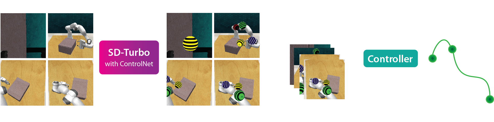

Image-generation diffusion models have been fine-tuned to unlock new capabilities such as image-editing and novel view synthesis. Can we similarly unlock image-generation models for visuomotor control? We present Genima, a behavior-cloning agent that fine-tunes Stable Diffusion to “draw joint-actions” as targets on RGB images. These images are fed into a controller that maps the visual targets into a sequence of joint-positions.
We study Genima on 25 RLBench and 9 real-world manipulation tasks. We find that, by lifting actions into image-space, internet pre-trained diffusion models can generate policies that outperform state- of-the-art visuomotor approaches, especially in robustness to scene perturbations and generalizing to novel objects. Our method is also competitive with 3D agents, despite lacking priors such as depth, keypoints, or motion-planners.
Genima is a behavior-cloning agent that maps RGB observations and language goals to joint-position actions. Genima is composed of two-stages: (1) a diffusion agent that fine-tunes SD-Turbo with ControlNet to draw target joint-positions. These joint-positions are from the t+K timstep in the demonstration, and each joint is rendered as a uniquely-colored sphere. (2) These visual targets are fed into an ACT controller that translates the visual targets into a sequence of K joint-position actions. The controller is trained with random backgrounds to ignore the context and just follow targets.
